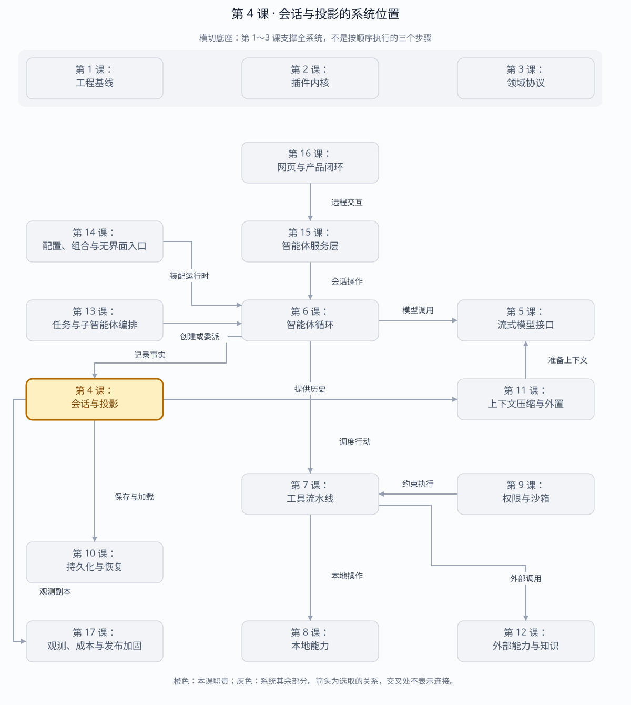

第 4 课：Session 事件账本与投影
Session Event Log 是事实源；消息历史、Token 汇总和运行状态都是可以删除并从日志重建的投影。
章节概览（可选）：三框架职责摘要
本章对比：DeepSeek Harness / DeepAgents / OpenHands
口径：DeepSeek 依据本地原仓库（99f6f02fecdb），不是 harness-lab；deepagent 按 LangChain DeepAgents 理解；OpenHands 对比当前 Software Agent SDK，不混用旧 V0。在线资料核对于 2026-08-28，描述文档能力，不代表已在本实验室安装或测试。没有依据的同名能力不强行等同。
三者的关键区别：恢复设计取决于权威状态在哪里：日志派生、图检查点、状态加事件，不能只看三者都有“历史消息”。（基于上述依据的归纳）
本章在全系统中的位置
位于智能体运行与存储、界面之间的状态中心。
下面是本课程的概念地图，不是某框架的逐包调用图，也不表示实验室已默认装配全部能力。三套框架的实际对应关系见上方横向对比表。
全系统定位 · 橙色高亮第 4 课
打开大图 · Mermaid 图源
| 上游与输入 | 第 6 课循环产生的消息、步骤与工具事实。 |
|---|
| 下游与输出 | 给模型的历史、给界面的视图以及给第 10 课存储的持久记录。 |
|---|
| 不归本章负责 | 内存会话不自动等于落盘；界面投影不应成为恢复事实源。 |
|---|
| 放进具体场景 | 刷新页面后，消息卡片可从会话事实重建，而不必依赖浏览器之前保留的组件状态。 |
|---|
接着看下方「可视化图解」：局部模块图解释职责，时序图解释一次调用，分支图解释异常与边界。
本课导览
| 包含内容 | 只追加事件账本、连续序号、消息投影、用量投影和生命周期投影。 |
|---|
| 涉及模块 | Session、事件日志、projectMessages、projectUsage、生命周期投影。 |
|---|
| 白话解释 | 账本只记录发生过什么；聊天记录、总用量和当前状态都是从账本重新算出的视图。 |
|---|
| 解决的问题 | 建立唯一事实源，使界面刷新、进程恢复和状态重建不会依赖易丢失的内存对象。 |
|---|
点击下面的概念名称，可直达该概念的三框架实现、区别与依据。原有能力清单、示例和验收描述面向 harness-lab 教学实现；不要将其直接当作上游框架能力声明。
完整能力清单
| 能力 | 输入与输出 | 边界 |
|---|
| 事件追加 | 为每个会话事件分配连续序号和时间，并通知追加监听器。 | 恢复时拒绝序号缺口。 |
| 模型可见面 | 按追加和区间替换操作生成当前送给模型的有效事件面。 | 压缩不删除事实日志。 |
| 消息投影 | 从有效事件面重建模型消息历史，忽略纯流式数据块和空助手消息。 | 保留事件中已有消息身份。 |
| 用量投影 | 分别累计输入、输出、缓存读取和缓存写入词元。 | 同一步骤最终用量覆盖流式样本。 |
| 生命周期投影 | 检查轮次、步骤和工具调用的开始/结束配对，给出当前状态。 | 损坏时报告具体事件序号。 |
| 序列化重放 | 事件经过 JSON 往返后，全部投影得到相同结果。 | 投影不依赖进程内对象身份。 |
主概念深挖：事件溯源与投影
Session 事件账本位于 Agent 等事实产生者的下游、持久化和所有读模型的上游，是恢复、观测和客户端同步的权威源。
Agent / LLM / Tool / Permission（写入命令结果）
│ append(event)
▼
Session Event Log
┌─────────┼──────────┐
▼ ▼ ▼
Messages Usage Lifecycle / Surface（读投影）
│ │ │
└────► 模型、UI、成本、恢复（下游）
| 背景与目的 | 只保存“当前状态”无法解释状态怎样形成，也难以修复崩溃；保存事实序列可重建任意读模型并保留审计链。 |
|---|
| 输入与输出 | 输入是带类型的 Session 事件；输出是连续事件序列以及消息、用量、生命周期和模型可见面的派生视图。 |
|---|
| 适用场景 | 长会话、冷恢复、断线续传、成本复算、上下文压缩和故障审计。 |
|---|
| 底层组件 | 追加数组、连续序号、事件监听器、纯折叠函数、区间替换操作和生命周期状态机。 |
|---|
| 核心逻辑 | 写侧只追加不可变事实；读侧从序号 0 依次折叠。最终用量覆盖流样本，Surface 替换只改变模型视图而不删除事实。 |
|---|
| 权衡 | 事件日志占用更多存储且投影需要计算，但获得完整历史、确定重放和新增读模型无需改写旧数据。 |
|---|
| 方案对比 | 状态快照读取快却缺少过程；事件日志信息完整但重放成本高；生产系统常以事件为真源、快照作加速缓存。 |
|---|
场景穷举
事件重放
├─ 连续且闭合 → 得到完整消息/用量/生命周期
├─ 重复事件 → 在网络客户端按 seq 去重
├─ seq 缺口 → 拒绝继续，重新取权威前缀
├─ open turn/step → 生命周期显示运行中或交给恢复修复
└─ surface replace → 只改变模型视图，原事件仍可审计
| 场景 | 投影结果 | 关键原因 |
|---|
| 正常一轮 | 消息、最终用量和闭合生命周期一致。 | 所有投影读取同一事件序列。 |
| 流式用量 | 中间样本可展示，最终样本覆盖同一步骤。 | 避免一个请求被重复计费。 |
| 空助手消息 | 用量进入统计，消息不进入模型历史。 | 传输可能只有 usage 而没有内容。 |
| 压缩替换 | 模型看到摘要，审计仍看到原始消息。 | 事实面和模型可见面职责不同。 |
| 损坏日志 | 生命周期投影指出具体序号并失败。 | 不猜测缺失事件的含义。 |
多方案对比
| 方案 | 读取 | 审计/恢复 | 适用条件 |
|---|
| 只存当前状态 | 最快。 | 无法解释过程和重建旧视图。 | 无历史要求的简单 CRUD。 |
| 事件日志实时重放 | 历史越长越慢。 | 最完整、最确定。 | 本实验和中等长度会话。 |
| 事件日志+快照缓存 | 从快照后增量重放。 | 快照可删，事件仍是真源。 | 大规模生产会话。 |
关键设计反问
- 为什么投影不能偷偷修复坏日志？
- 每个投影若各自猜测，会得到互相矛盾的状态；修复必须在统一恢复边界产生显式事件。
- 为什么 Surface 不是另一个可变消息数组？
- 可变数组无法说明哪些历史被何次压缩替换；事件化 replace 才能重放压缩链。
- 投影计算太慢怎么办？
- 增加带事件序号的缓存或快照，但缓存必须可删除并从权威日志重建，不能反客为主。
读写边界
LLM stream ── usage chunk ─┐
final assistant/message ──┼──> append-only Session Event Log
tool call/result ─────────┘ │
┌────────────────┼───────────────┐
▼ ▼ ▼
model history token usage lifecycle
projection projection projection
| 数据 | 事实存放处 | 投影规则 |
|---|
| 模型上下文 | user/assistant/tool-result 事件中的 Message | 忽略 chunk 和空 assistant message |
| Token usage | assistant/chunk 或 assistant/message 的 usage | 同一 turn/step 后来的样本覆盖前者，防止重复计数 |
| 运行位置 | turn、step、tool 事件序列 | 重放得到 open turn/step 和 pending tool calls |
| 货币 cost | 本阶段没有独立权威字段 | 由 TokenUsage × 模型价格派生时必须记录价格版本 |
投影不是备份。投影缓存丢失不会丢会话；事件日志丢失才会。恢复时先加载日志、验证 seq 连续，再重放投影。
事件追加：三框架分别怎么做？
同一个问题：追加是否先提交，再通知观察者？
这个概念的区别：通知顺序影响观察一致性，但三者的提交单位分别是事件、图步骤、会话更新。
模型可见面：三框架分别怎么做？
同一个问题：原始历史是否全部直接送给模型？
这个概念的区别：三者都有“所存≠所见”，但可见视图的更新协议不同。
消息投影：三框架分别怎么做？
同一个问题：聊天列表与模型消息如何重建？
这个概念的区别：聊天卡片、运行状态和模型输入应分别投影，不能让一种消息数组包办所有用途。
用量投影：三框架分别怎么做？
同一个问题：累计消耗和当前窗口占用是否同一个数？
这个概念的区别：压缩应让窗口压力下降，但不应让已付出的历史使用量倒退。
生命周期投影：三框架分别怎么做？
同一个问题：running、idle 等状态从哪里得到？
这个概念的区别：不能把“最后一条聊天消息”当运行状态；状态可能有独立的权威渠道。
序列化重放：三框架分别怎么做？
同一个问题：重放历史是否会再次执行工具？
这个概念的区别：replay 一词尤其容易误导：纯重放投影和重新执行后续计算必须分开。
运行与断点
cd harness-lab
bun run typecheck
bun test
# Chrome 打开 chrome://inspect，在 foldTokenUsage 或 inspectLifecycle 设断点
VS Code F5 → 03 · 会话投影
建议观察的三个断点
deriveMessages()：确认 text-delta 不会污染模型历史。samples.set(`${turn}:${step}`, usage)：观察最终 usage 覆盖流式 usage。inspectLifecycle() 的 fail()：把 tool/result 的 callId 改错，确认错误包含 seq。
本阶段验收
TypeScript strict check: passed
tests: 16
pass: 16
fail: 0
覆盖：消息身份、usage 去重、生命周期校验、JSON 恢复后投影一致
源码与一手参考
下一课接入可控的流式 LLM seam：先做 fake provider，再接真实 DeepSeek API，让每个 chunk 都能暂停和复现。
返回完整路线 →